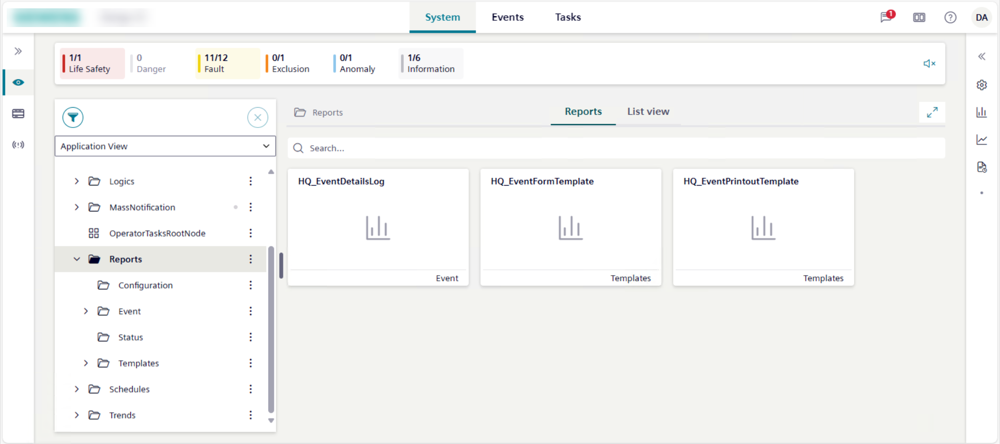
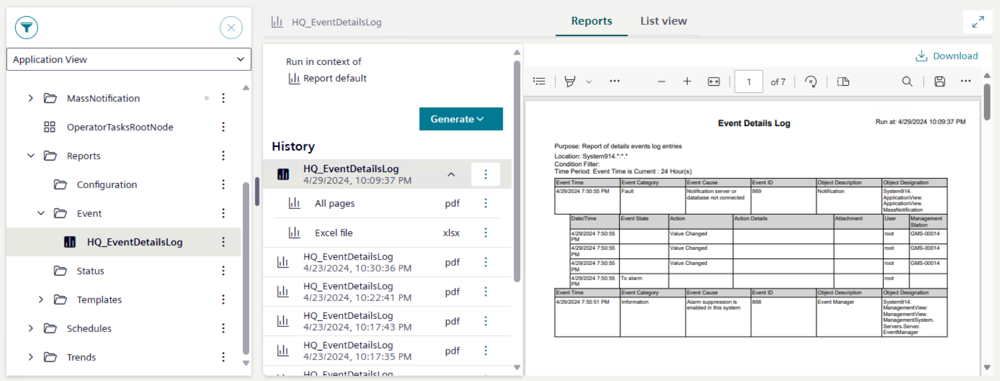

Reports
This section provides reference and background information for handling reports in the Flex Client application. For related procedures, see the step-by-step section.

The availability of the Reports tab depends on your user group privileges.
If appropriate application rights are not set for you, the application will not be displayed.
Reports Workspace
Report objects are located in Application View, under Applications > Reports.
- If you select Reports or a subfolder, the Reports tab displays all the available report definitions as tile icons.
- If you select a subfolder, the Reports tab displays only the report definitions available for that folder as tile icons.
- If you select a report definition in a subfolder or from tile view, the preview and History areas remain empty, and no preview is available. The only information displayed regards the context in which the report runs:
Report default
You selected a report definition in System Browser, and the Reports tab displays in the Primary pane.
Or for the system object selected in System Browser, you selected a report definition related item in the right panel, and the Reports tab displays in the Comparison pane, but the report definition was not configured to Show as related item.- Name of the system object
For the system object selected in System Browser, you selected a report definition related item in the right panel, the Reports tab displays in the Comparison pane, and the report definition was configured to Show as related item.

Report Generation
If you select a report definition and then Generate, you can export its content to PDF, Excel, or both formats.
Then the History area populates with the report generation details. In particular, a record is created for the run of each report definition, indicating the name of the selected report definition and the timestamp of when the report was run. Also, a preview of its content is displayed in the preview area.

- By expanding a record, the list of the report exports displays in the History area.
- By selecting a PDF export record in the History area, a preview of its content is displayed in the preview area.
- By selecting an Excel export record in the History area, no preview for this export is available. You can only download it to an Excel file.
- By selecting multiple export records in the History area, no preview is available. You can only download as files.
- Next to a report definition, if you select , you can download or delete all the report files for a report definition.
- Next to a report export record, if you select , you can download, preview, or delete the corresponding export.
When displaying a report preview, its scroll is not persisted along the same user’s session for example, when switching tab or context, or changing the layout.